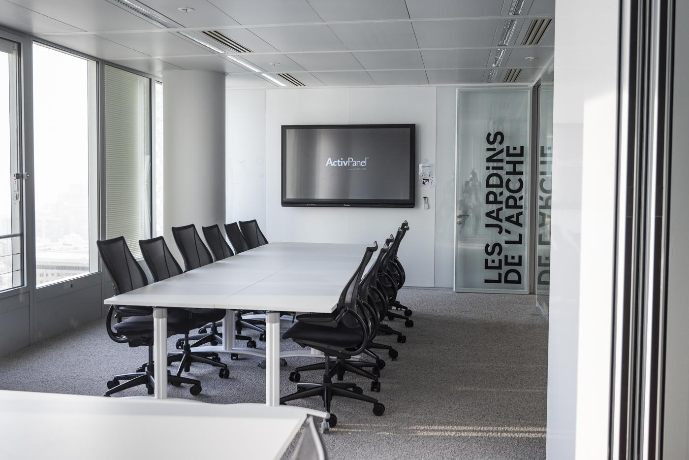

Recruitment
Job Description
The objective of the position is to provide operational support to the development team. Thus, under the supervision of a technical manager, you will be required to :
- Intervene in the development of changes and in the correction of bugs on the Hyperspace solution, to improve the experience of thousands of our clients' students;
- Intervene on fixes and evolutions of our Enterprise APIs, to increase the functionality of integrations with our partners and customers;
- Integrate modifications and evolutions of the user interface (UX / UI) on the various functionalities of the Enterprise, Education and general public solutions;
- Integrate new and original CV and letter templates for our clients, to strengthen the variety of our consumer value proposition;
- Carry out integration and deployment tests (CI / CD), to guarantee the quality and robustness of evolutions and fixes.
Required profile
- Computer Engineer training or BAC + 2 (DUT or BTS in Computer Science) at least;
- At least 1 year of experience (at least in personal or entrepreneurial project activities, or as part of internship (s) ...);
- Good knowledge of JavaScript, TypeScript, PHP7, Twig and SQL languages;
- Knowledge of VueJS or ReactJS framework;
- Comfortable integrating web interfaces in HTML and CSS3, using frameworks such as TailwindCSS, Bootstrap, Bulma ...
Recruitment process
Send your CV and present your motivation to : rakoto_j@etna-alternance.net or/and gueye_m@etna-alternance.net
- A 20-minute telephone interview to get to know each other and find out your motivations;
- A 3-hour technical test;
- An informal, distance or face-to-face interview with the whole team